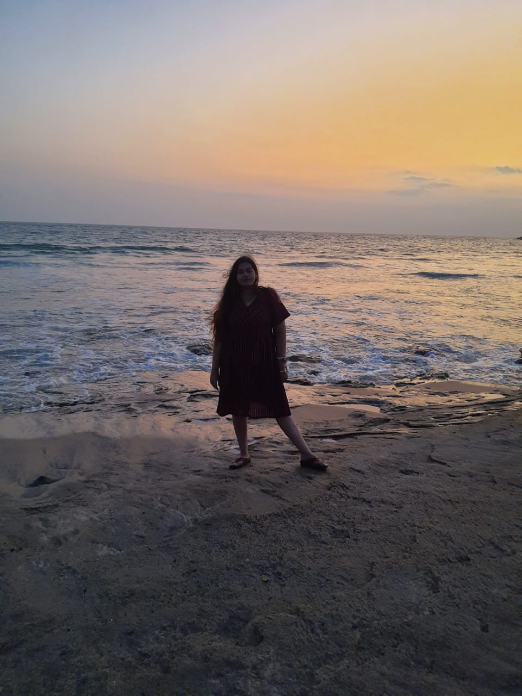

I resigned from my job without having another job in hand, and started solo travelling three months ago.
When I left my job without having another job in hand, I was scared. When I started out with the idea of
solo travelling, I had loud fears about calling unfamiliar places as home and completely relying on
strangers. I was scared. Fearful of the future, what my family and friends might say, taking a break so
early in my career. I was scared. The uncertainty, I WAS VERY SCARED!

I was fearful of the world out there which is not ready to accept an unemployed engineering graduate and
a
solo female traveller. Believe it or not, we all are great storytellers, weaving scenarios in our head
that
breed fear without even realising what it may lead to. Which is why telling yourself a different story
is
very important, and believing it even more!
I chose to believe a different story when I left my job. I am strong and capable. I am loved. I believe
in
myself. …and a different one while I travelled. I am safe, I am excited. I am prepared for the beautiful journey ahead of me!
Today, as I write this, I have been to ten different cities in India in the last three months. Everytime
I
started a new trip, I felt the scare, while I also anticipated I’d feel exhilarated when I’d reach the
beautiful destinations, which I did - but what I truly got out of travel had nothing to do with
site-seeing,
but everything to do with how it felt to be in the wild, listening to my senses while I connected with
most
amazing people. It reiterated the innate human desire to connect with one another - beyond the
artificial
boundaries and languages. My trips have gifted me so many memories - going out at midnight with the new
friends I made, sleeping on the beach at 4AM, and swapping my most intimate stories with complete
strangers. But the
biggest gift was – confidence. Confidence to solely rely on myself, planning my own itineraries, leaving
home in a new city and returning safely.
I could fearlessly communicate about having taken a break from work, because, to my surprise, no one
judged
me. And in no time I realised that it’s not even a big deal!
(As the world gets bigger to you, you realise how small you are within it and how little anything you do
really matters. You are an imperceptible grain of sand in millennia and millennia in a universe greater
than
anyone can imagine. So stop worrying so much that you’ll make a mistake, because it’s not as big of a
deal
as you think.)
Fear is natural. We are wired to feel fear everytime we face something unfamiliar. Fears are mostly our
own
insecurities and vulnerabilities. And, being fearless doesn’t mean being foolhardy, instead, looking at
your
own fears, understanding why they exist and then changing the narrative.There are so many thoughts and
people that will come in your way of living life, but you have just got to do what you want to!
Travelling by myself, finding out what I’m made of – that I’m capable enough, brave enough, resourceful
enough, smart enough, and powerful enough healed me in ways I never could have otherwise.